Разбор стилиста · 13 ноября 2026 · зима в Москве · прогулки, музеи, рестораны
Зимний гардероб Эльвиры
Задача: чтобы одежда считывалась как женственная и при этом выдерживала ежедневные долгие прогулки по зимней Москве. Женственность здесь дают не каблуки и не неудобство, а три вещи: отмеченная талия, мягкие фактуры и глубокий тёплый цвет у лица. Ниже палитра, правила, восемь повседневных образов вокруг ваших дублёнки и двух пуховиков, три солидных и три смелых на выход, четыре причёски и список покупок.
ЦветотипТёмная осень: тёмные волосы и глаза, тёпло-нейтральная кожа с веснушками, контраст выше среднего. Запасной вариант: тёмная зима, проверить драпировкой.
ФигураМягкие песочные часы, 166 см, тонкая кость, плавные линии. Талия видна, когда одежда её отмечает.
СтильМягкий натурал как основа, романтик для выхода: кашемир, замша, шёлк, запах, жемчуг.
МешаетОверсайз сверху донизу, бледно-жёлтый и нюд у лица, укороченные широкие брюки, кеды в «нарядных» образах.
Ваша палитра
16 цветов · 8 не у лица
База
Пальто, брюки, юбки, обувь, сумки
Эспрессо#3B2A22Тёмный шоколад#4E342EКэмел#B5835AКофе с молоком#A0826DСлоновая кость#F3EBDDЧернильный синий#2B3A4F
Проверить дома за 10 минут. У окна днём, без макияжа, волосы под белым полотенцем. Приложить к лицу по очереди: золото и серебро, слоновую кость и белый, шоколад и чёрный, терракоту и фуксию. Если в трёх парах из четырёх лучше первый цвет, палитра верна. Если второй, тип ближе к тёмной зиме: терракоту и горчицу заменить на бордо и сапфир.
Шесть правил
Талия всегда отмечена. Пояс на пуховике и пальто, платье с запахом, свитер заправлен спереди. Без этого фигура пропадает.
Объём только в одной зоне. Крупный свитер с узкой или струящейся юбкой. Широкие брюки с облегающим верхом.
У лица глубокий тёплый цвет. Терракота, бордо, бутылочный зелёный или слоновая кость. Бледно-жёлтый и нюд убрать от лица.
Длины. Юбки миди до середины икры, брюки в пол до середины каблука. Край юбки перекрывает сапог на 3–5 см.
Обувь для прогулок. Устойчивый каблук 3–6 см или трактор 3–4 см, нос мягко скруглённый. Кеды оставить для спорта.
Детали среднего размера. Серьги-капли и кольца 2–3 см из тёплого золота, барочный жемчуг. Мелкие гвоздики теряются на фоне тёмных волос.
Прогулки
каждый день · −5…−15 °C
Принцип
Длинный пуховик без пояса превращается в спальный мешок и съедает рост. С широким кожаным поясом он становится пальто с талией.
Цвет даёт шарф: это самая дешёвая вещь в образе и при этом единственная, что видна у лица всю прогулку.
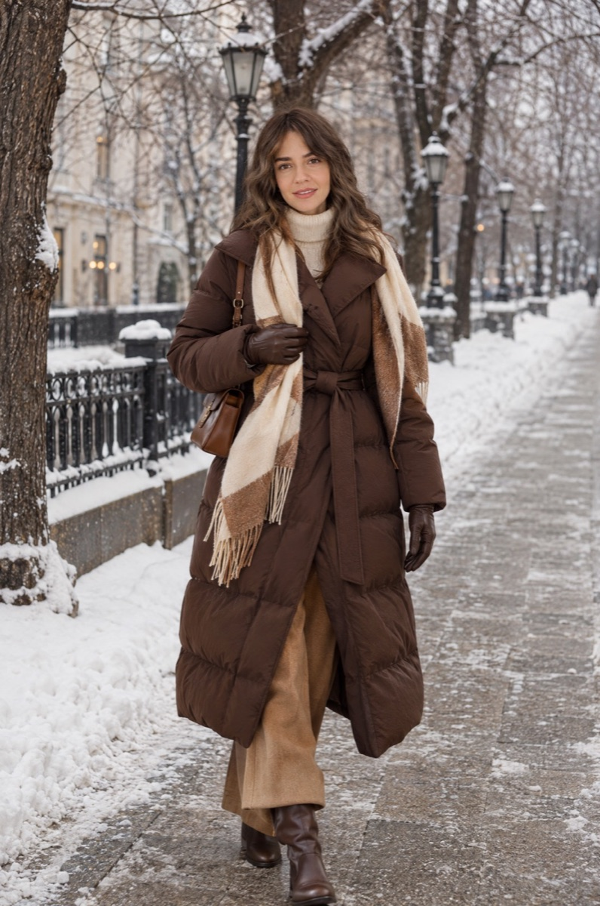
1Бульвар · −5…−15 °C
Коричневый пуховик с поясом
Прогулка с ребёнком, дела по городу.
Длинный коричневый пуховик, на поясе ваш
Водолазка цвета слоновой кости, кашемир
Палантин в клетку кость и карамель, или терракотовый
Широкие шерстяные брюки кэмел в пол
Сапоги до колена, каблук 5 см, перчатки
Почему работает. Шоколад, кость и кэмел, это ваша база. Пояс собирает силуэт, светлое у лица освещает его.
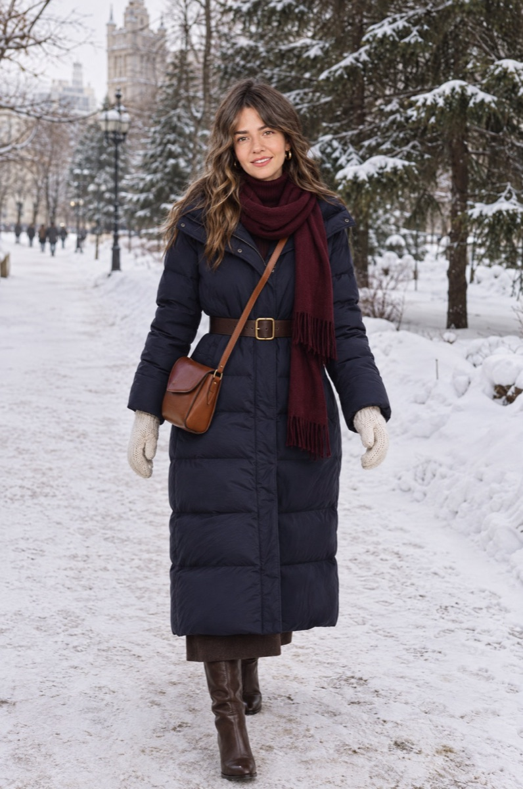
2Парк · −5…−15 °C
Синий пуховик и бордо
Долгая прогулка, парк, детская площадка.
Длинный синий пуховик, застёгнут ваш
Широкий кожаный пояс шоколадного цвета
Бордовые кашемировые водолазка и шарф
Юбка-миди шоколад, сапоги на каблуке 5 см
Сумка через плечо цвета коньяка, варежки кость
Почему работает. Бордо у лица делает синий тёплым и углубляет карие глаза. Если ваш пуховик ярко-васильковый, шарф обязателен.
Город и музей
сухие дни, выставки, кафе
Принцип
Дублёнка короче пуховика, поэтому под ней видно платье. Трикотажное миди по фигуре, это самый простой женственный образ, который при этом греет.
В музее верхняя одежда в гардеробе, и образ держится на жакете. Ваш кремовый пиджак уже идеален по цвету, нужен только тёплый слой под ним.
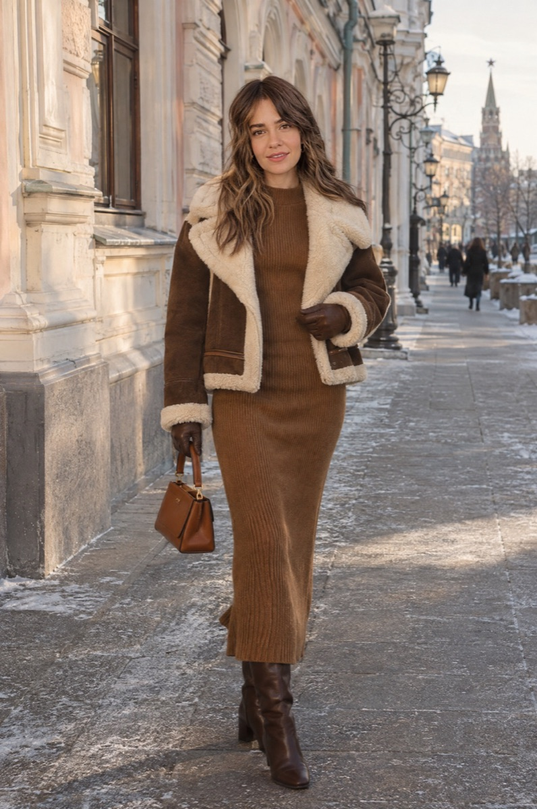
3Город · сухо, мороз
Дублёнка и трикотажное платье
Прогулка по центру, кафе, встреча с подругами.
Короткая дублёнка ваша
Трикотажное платье-миди в рубчик, карамель
Сапоги до колена, каблук 5 см
Маленькая сумка цвета коньяка, перчатки
Почему работает. Платье по фигуре и короткий верх показывают талию. Мех у лица смягчает. Оттенок дублёнки на кадре условный.
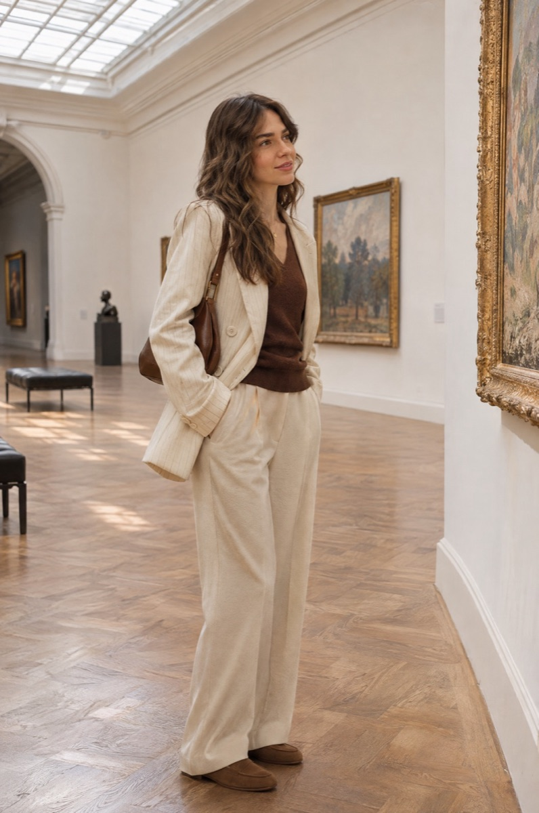
4Музей · внутри
Ваш кремовый пиджак
Музей, выставка, обед в городе.
Кремовый двубортный пиджак в полоску ваш
Шоколадный кашемировый джемпер с V-вырезом
Широкие брюки кость в пол, высокая посадка
Замшевые лоферы ваши, золотая цепочка
Почему работает. Ваш летний образ, переведённый в зиму: тот же шоколад с костью, только кашемир вместо майки. Пиджак носить расстёгнутым: так видна линия талии.
Вечер
ресторан, театр, праздник
Принцип
Вечером работает один глубокий цвет на всю площадь: бутылочный зелёный или терракота. Это ваши сильные цвета, и на них лучше всего видны карие глаза.
Шёлк и тонкий трикотаж с запахом или поясом дают женственность без корсетов и шпилек. Каблук всё тот же, 5 см.
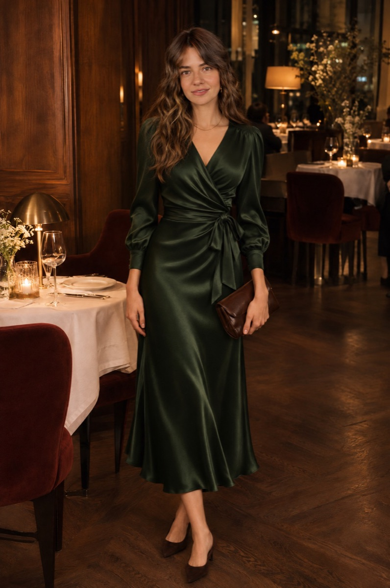
5Ресторан · вечер
Зелёный шёлк с запахом
Ужин, годовщина, театр.
Шёлковое платье-миди с запахом, бутылочный зелёный
Замшевые лодочки шоколад, каблук 5 см
Маленький клатч
Серьги-капли и тонкая цепочка, тёплое золото
Почему работает. Запах отмечает талию и даёт V-вырез, который вытягивает шею. Зелёный подчёркивает карие глаза.
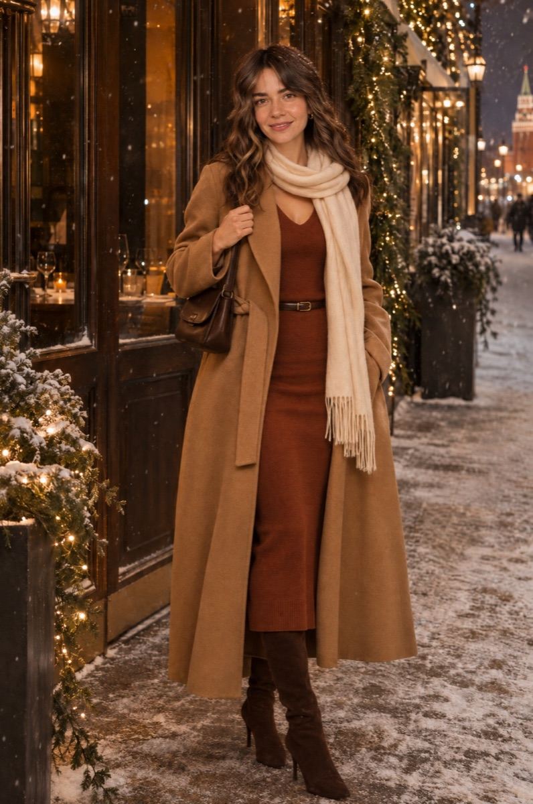
6Вечер · −5 °C, снег
Пальто кэмел и терракота
Ресторан, гости, прогулка по праздничному центру.
Длинное пальто-халат кэмел, шерсть
Трикотажное платье-миди терракота, тонкий пояс
Кашемировый шарф цвета слоновой кости
Замшевые сапоги до колена, каблук 5 см
Почему работает. Терракота, самый «ваш» цвет из палитры, на кэмеле смотрится тепло и дорого. Слоновая кость у лица мягче белого.
Утро и кафе
завтрак, кофе с подругой
Принцип
Утром женственность тише: мягкий кардиган вместо платья, но заправленный и с поясом, чтобы была талия. Пушистая фактура у лица и есть главный акцент.
Верхнюю одежду берите любую из прогулочных: пуховик с поясом или дублёнку. Внутри кафе видно только то, что под ней.
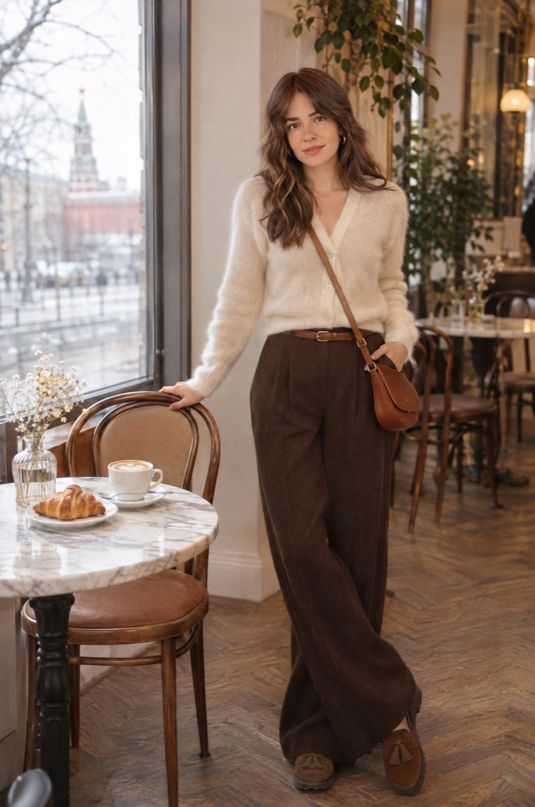
7Кафе · утро
Кардиган и брюки эспрессо
Завтрак, кофе, утренние дела по городу.
Мохеровый кардиган слоновой кости с V-вырезом, заправлен
Широкие шерстяные брюки эспрессо в пол
Тонкий коньячный пояс и сумка через плечо
Замшевые лоферы ваши, золотые кольца-серьги
Почему работает. Объём только сверху и мягкий, низ ровный и длинный. Пояс держит талию, светлое у лица освещает.
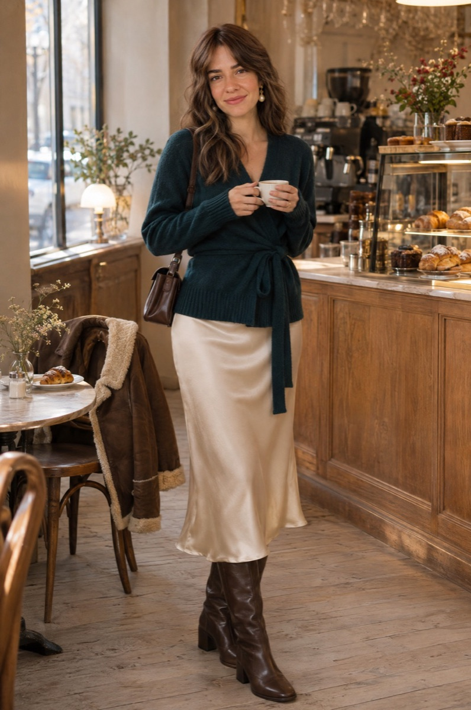
8Кафе · утро
Тил и атлас
Кофе с подругой, бранч в выходной.
Кардиган с запахом цвета тил, тонкий трикотаж
Атласная юбка-миди по косой, слоновая кость
Сапоги до колена на каблуке 5 см
Серьги с барочным жемчугом, короткая дублёнка ваша
Почему работает. Запах даёт талию и V-вырез, тил подчёркивает карие глаза. Атлас днём выглядит женственно, а сапоги делают его повседневным.
Солидно
приём, театр, важная встреча
Солидность дают длина, плотная ткань и цельный цвет: всё до пола или ниже колена, без складок, в одной гамме от головы до обуви. Украшения крупнее обычного, сумка с жёсткой формой. Мягкость остаётся в волосах и улыбке, иначе образ становится строгим, а не дорогим.
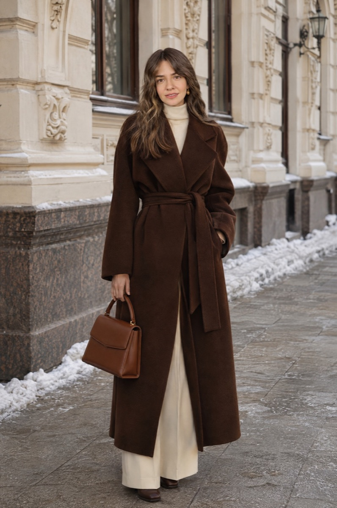
С1День · −5…−10 °C
Пальто в пол
Важная встреча, школа, врач, обед с родителями.
Пальто-халат до щиколотки, шерсть с кашемиром, с поясом
Водолазка и широкие брюки в пол, слоновая кость
Коньячная сумка с жёсткой ручкой
Почему работает. Длина в пол и тон в тон, это язык «старых денег». Пояс сохраняет женственность.
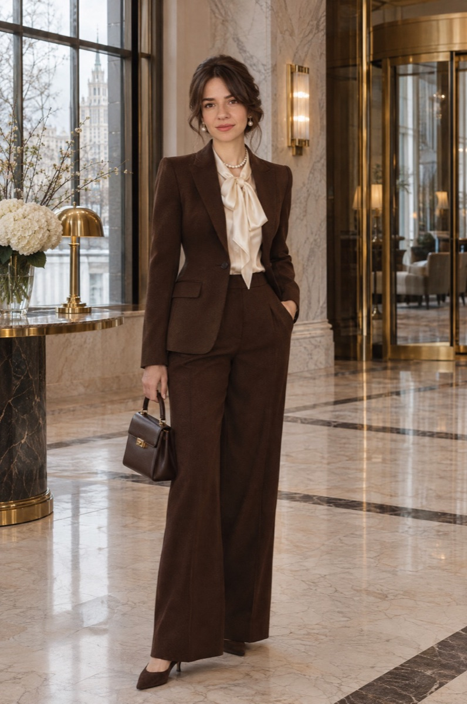
С2Приём · в помещении
Шоколадный костюм и бант
Деловой обед, приём, официальное событие.
Приталенный жакет и брюки в пол, шоколадная шерсть
Шёлковая блуза с бантом, слоновая кость
Жемчуг, замшевые лодочки, низкий пучок
Почему работает. Шоколад солиднее чёрного и мягче к её лицу. Бант не даёт костюму стать офисным.
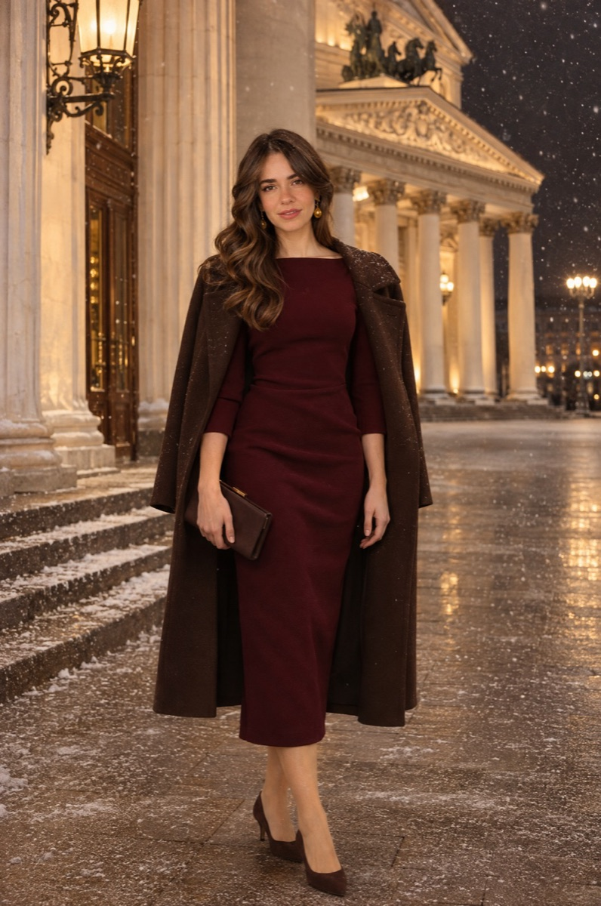
С3Театр · вечер
Бордовый футляр
Театр, юбилей, ужин с партнёрами мужа.
Платье-футляр миди из плотного крепа, вырез-лодочка
Длинное пальто эспрессо, накинуто на плечи
Серьги-капли, клатч, голливудская волна
Почему работает. Один глубокий цвет на всю длину и чёткий силуэт. Пальто на плечах выглядит увереннее, чем надетое.
С огоньком
свидание, бар, вечеринка
Молодит не короткое, а смелая деталь при спокойном остальном: кожа, разрез, открытые ключицы, бретели, мех. Правило одно: одна смелая вещь на образ. Длины остаются миди, цвета её, поэтому выглядит дерзко, но не вульгарно.
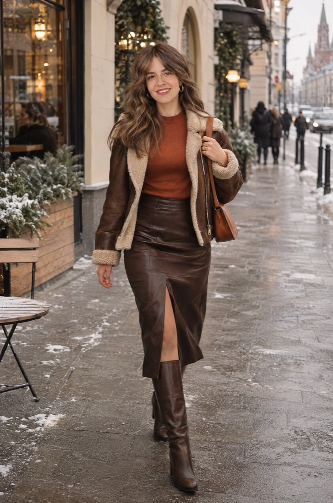
Ч1Город · день
Кожа и разрез
Прогулка, бранч, шопинг.
Кожаная юбка-миди с разрезом спереди
Облегающий терракотовый джемпер, заправлен
Дублёнка-авиатор или ваша, сапоги 6 см
Почему работает. Кожа и разрез дают дерзость, а длина миди и тёплый цвет оставляют образ взрослым.
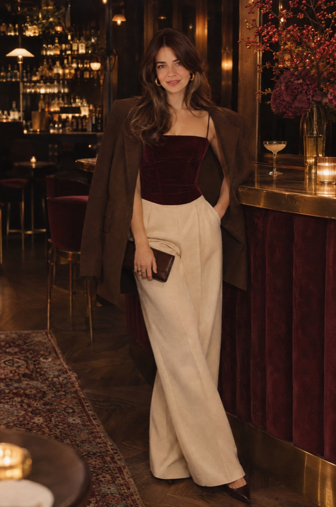
Ч2Бар · вечер
Бархатный корсет
Бар, день рождения подруги, свидание.
Бархатный корсетный топ на бретелях, бордо
Широкие брюки в пол, слоновая кость
Пиджак оверсайз на плечах, лодочки, укладка 90-х
Почему работает. Корсет отмечает талию и открывает ключицы, широкие брюки и пиджак уравновешивают.
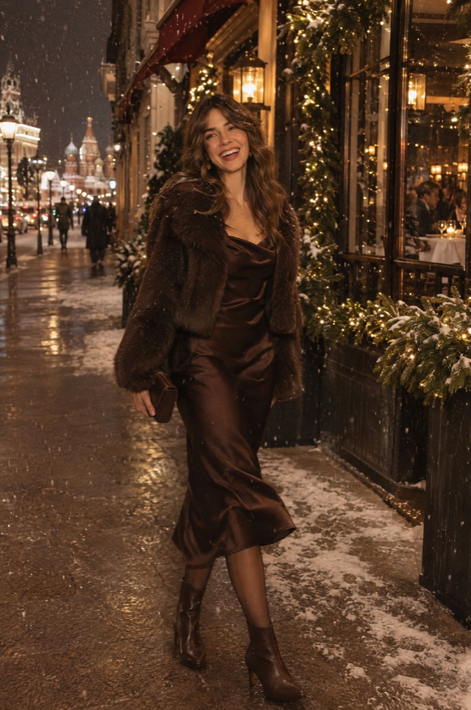
Ч3Праздник · ночь
Комбинация и шубка
Новый год, вечеринка, ужин вдвоём.
Атласное платье-комбинация миди, шоколад
Короткая шубка из искусственного меха
Тонкие колготки, ботильоны 6 см, серьги-капли
Почему работает. Атлас и мех вместе выглядят праздничнее блёсток. Тон в тон делает смелое платье дорогим.
Причёски
на ту же стрижку, без смены длины
Каждый деньНизкий пучок с прядямиПод шапку и капюшон. Пряди у скул оставлять обязательно: гладкий пучок без них делает лицо круглее.ВечерГолливудская волнаГлубокий боковой пробор, волны на одно плечо. К шёлковому платью и бордо, образы 5 и 6.
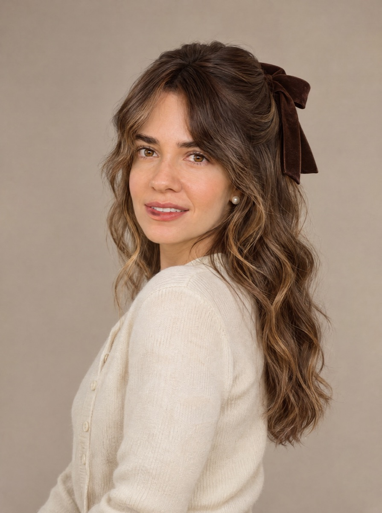
Кафе, музейПолухвост с бантомСамая романтичная из четырёх. Бархатный бант в шоколаде или бордо, волосы в мягкой волне.Праздник, фотоУкладка 90-хОбъём у корней, концы от лица, шторка на стороны. Брашинг за 20 минут, держится весь день.
Кадры сгенерированы по вашим фотографиям. Лицо и посадка приблизительные, оттенки ваших пуховиков и дублёнки на кадрах условные. Часть впечатления дают фон и свет.
Купить этой зимой
Куплено 0 из 26
Сначала, недорого
Меняют то, что уже есть: пуховики становятся женственными.
Основа под верхнюю одежду
То, что видно в помещении. Кашемир и тонкая шерсть.
Для выхода
Вечерние вещи. По одной, когда будет повод.
Солидно и с огоньком
По желанию, когда захочется нового настроения.
Из вашего шкафа
Короткая дублёнка. Оставить. Носить с платьем или юбкой-миди и сапогами, образ 3.
Коричневый пуховик. Цвет в палитре. Добавить пояс и тёплый шарф, образ 1.
Синий пуховик. Оставить с поясом. У лица всегда бордо или кость, образ 2.
Кремовый пиджак в полоску. Лучшая вещь в шкафу. Зимой с кашемиром, образ 4.
Замшевые лоферы. На сухие дни и в помещение.
Юбка-миди в цветы и персиковая блузка. Ваши самые женственные летние вещи. Вернутся в мае.
Флисовая куртка и спортивное. Для дачи и площадки, не для города.
Бледно-жёлтые и нюдовые футболки. Носить только под пиджак или кардиган, не у лица открыто.
Без покупок, уже завтра
Подпоясать пуховик. Любым кожаным поясом, который есть дома.
Заправить свитер спереди. Сразу появляется талия.
Брюки в пол. Укороченные широкие брюки отложить до лета или подшить с каблуком.
Кеды заменить на ботинки в любом образе с юбкой или платьем.
Стрижку не менять. Нынешние слои и шторка подходят идеально.